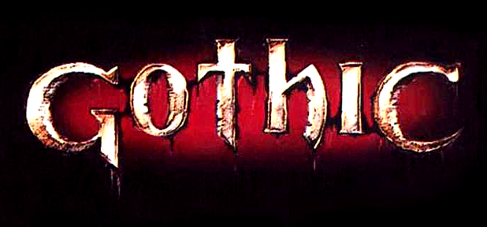
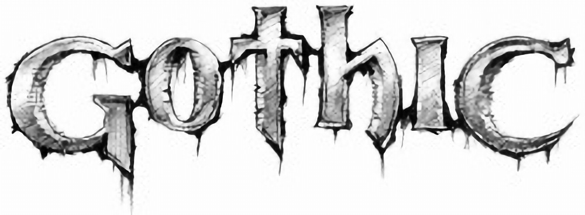
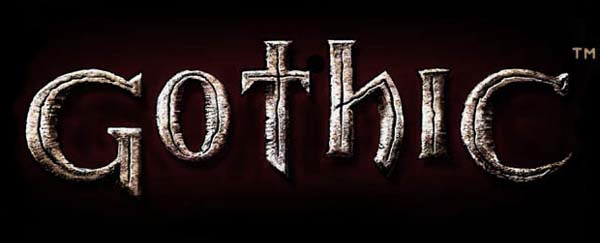
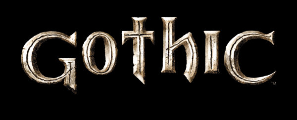
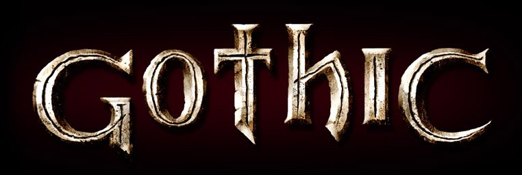
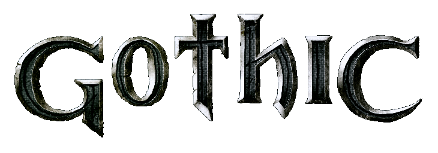
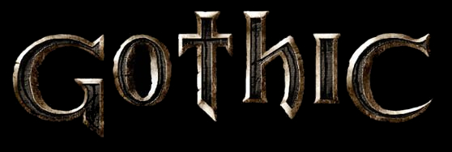
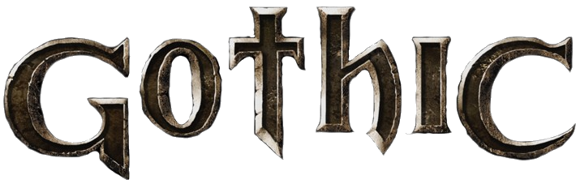
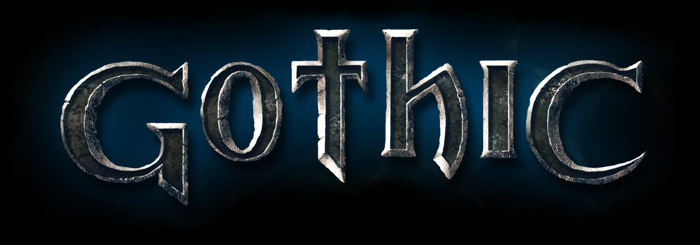

../ Gothic Logo Design

Trademark Logo based on the first logo:

Second Design as seen on piranha-bytes.com 1999; this 'archaic' design added the lines in the middle, removed the blood/spiderweb:

Third Design, late 1999 or early 2000, taken from the PressKit 02/2001; was used in the Comic, re-introduced sharper edges and brought the golden colour back:

Third Design (early 2000 probably) with improved colours, this version was used for the polish release:

From third to fourth: This logo was used for the english Gothic Manual and introduced the 'inside frame':
The fourth Logo Design, changing the gold into a dark tone:

Fourth Design version 2, colour revision:

In the fifth Logo Design the inside lines were removed:

The latest design as used for the german release:
